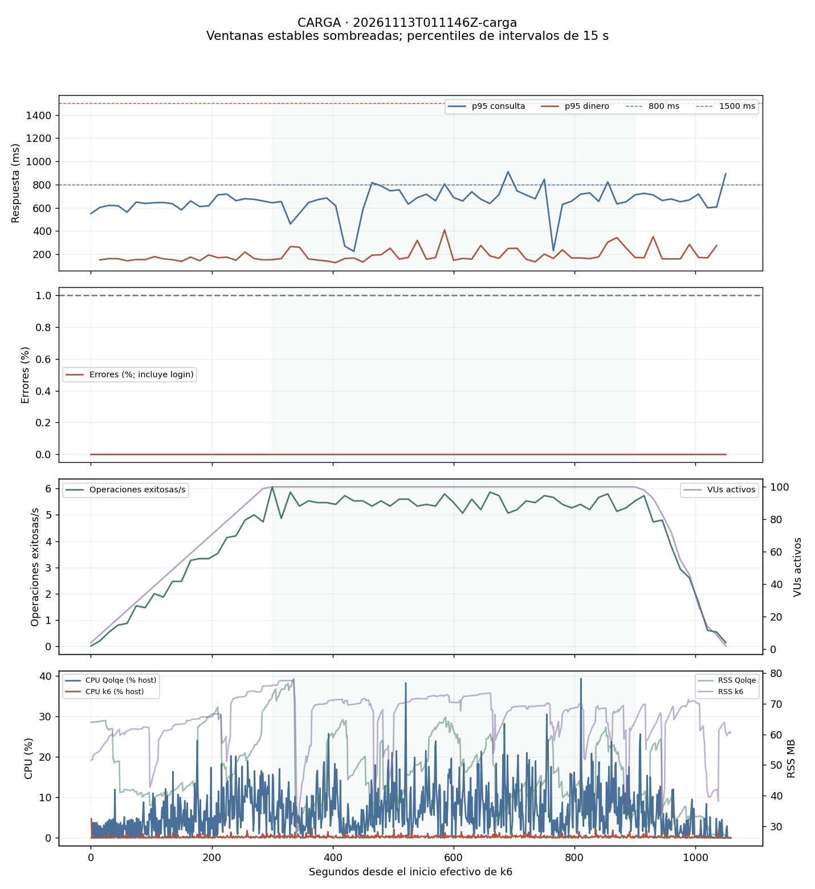
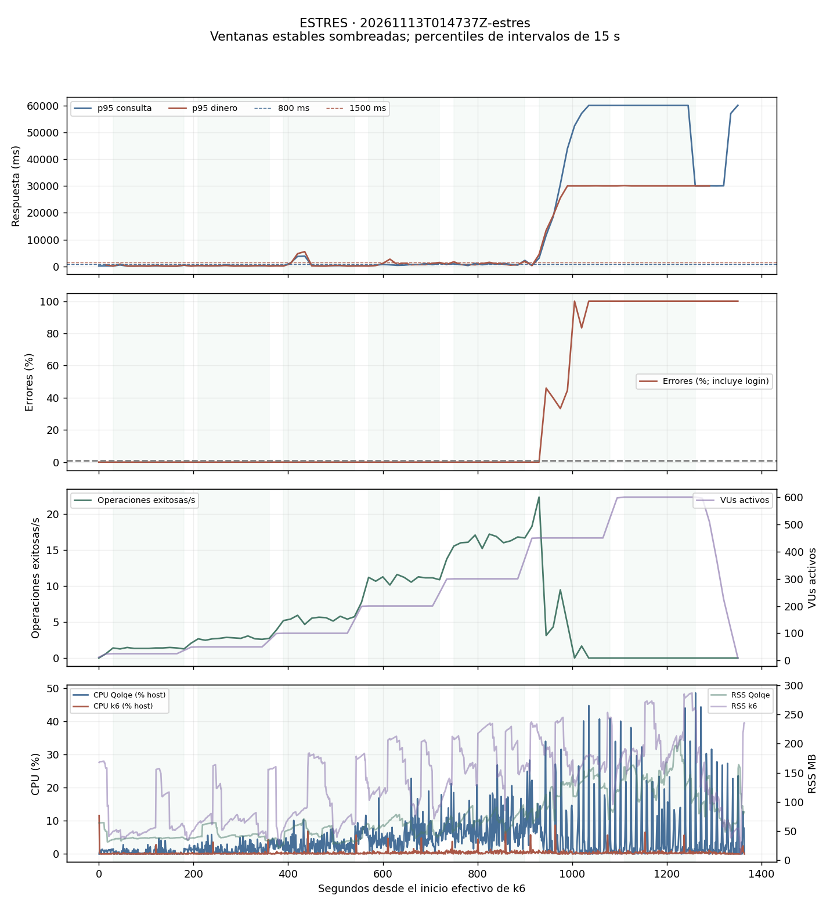

¿Qolqe soporta la campaña de quincena?
Se evalúa la capacidad de Qolqe Wallet frente a la demanda normal y la campaña. El trabajo combina un modelo de carga derivado del negocio, medición de recursos y conciliación de operaciones monetarias.
Las conclusiones corresponden al entorno local medido. El código original de la aplicación se conserva intacto y las limitaciones se registran junto a cada resultado.
El requerimiento define qué comprobar
En hora punta se inician 3000 sesiones por hora. Cada sesión dura en promedio dos minutos y realiza seis operaciones. La campaña triplica los usuarios simultáneos durante quince minutos y concentra inicios en los primeros cinco.
| Condición | Criterio |
|---|---|
| Consultas e inicio de sesión | p95 menor que 800 ms |
| Transferencias, recargas y pagos | p95 menor que 1500 ms |
| Hora punta | Como máximo 1% de errores y sin acumular retrasos |
| Campaña | Ninguna operación monetaria parcial ni duplicada |
“Degradación razonable” no define un umbral numérico de campaña. Los tiempos de campaña se compararon con la referencia normal; el requerimiento no fija un SLA numérico para ese periodo.
Herramienta utilizada: k6
k6 fue el único generador de carga utilizado en las pruebas. Locust y JMeter se evaluaron como alternativas.
k6 permite definir escenarios como código, aplicar etiquetas por operación y conservar métricas y umbrales. Se eligió por su integración con scripts versionados y su cercanía con JavaScript/TypeScript ya usado por el equipo.
En Qolqe, los scripts reúnen las peticiones HTTP, las pausas y la mezcla de operaciones; la configuración define los VUs y las rampas. Los umbrales distinguen consultas y operaciones de dinero. Esto permite reproducir carga normal, campaña y estrés a partir del mismo flujo.
La preparación de datos, la medición de CPU y memoria y la conciliación monetaria se implementaron con Python. psutil funciona como monitor de recursos; no es un segundo generador de carga.
Por qué se eligió k6 frente a las alternativas
| Herramienta | Cuándo resulta conveniente | Decisión para Qolqe |
|---|---|---|
| k6 · seleccionada | Pruebas HTTP definidas en JavaScript, con etapas, etiquetas y umbrales en el código. | El equipo ya utiliza JavaScript/TypeScript. Se mantuvieron los escenarios en un lenguaje conocido y se configuraron tres perfiles sobre el mismo flujo. |
| Locust · alternativa | Equipos que modelan usuarios con Python y necesitan reutilizar bibliotecas o lógica de ese ecosistema. | Se prefirió JavaScript para los escenarios y se reservó Python para datos, monitoreo y análisis. Locust no se utilizó en las ejecuciones. |
| JMeter · alternativa | Diseño visual de planes y pruebas que combinan protocolos, como HTTP y JDBC. | El alcance se centró en HTTP; se priorizaron scripts JavaScript frente a mantener un plan visual adicional. JMeter no se utilizó en las ejecuciones. |
La elección de k6 respondió al lenguaje del equipo, el alcance HTTP de la prueba y la configuración de carga y umbrales mediante código.
Los flujos se priorizan por frecuencia y riesgo
| Operación | Peso | Justificación |
|---|---|---|
| Saldo y perfil | 30% | Acceso frecuente a información de cuenta |
| Movimientos | 15% | Consulta de historial y confirmación de operaciones |
| Transferencias | 15% | Movimiento directo de dinero |
| Contactos | 10% | Consulta y búsqueda usadas en transferencias |
| Recargas | 10% | Débito y emisión de comprobante |
| Consulta de deudas | 6% | Consulta previa al pago |
| Pagos | 4% | Débito y cancelación de una deuda |
| Otros | 10% | Límites, alertas, solicitudes, dispositivos y sesiones |
Las ponderaciones se aplican a operaciones de negocio. Saldo y perfil agrupa dos peticiones HTTP; login se mide por separado. El reporte conserva la mezcla realmente obtenida.
El modelo parte de los datos del negocio
| Parámetro | Derivación |
|---|---|
| Concurrencia normal | 3000/60 × 2 = aproximadamente 100 usuarios |
| Concurrencia de campaña | 100 × 3 = aproximadamente 300 usuarios |
| Volumen normal | 3000 × 6 / 3600 = 5 operaciones/s, además de login |
| Pausas | 10–25 s; triangular con moda 19 s para media 18 s |
| Sesión | Un login y seis operaciones; no se fuerza a durar exactamente 120 s |
La duración de sesión de dos minutos es una media de negocio. Bajo degradación, las sesiones pueden durar más. Los percentiles y el throughput se miden en ventanas estables y las diferencias se registran.
Carga, campaña y estrés se ejecutan por separado
| Perfil | Configuración | Objetivo |
|---|---|---|
| Referencia | 1 usuario | Validar scripts y obtener una referencia sin carga |
| Carga | Subida 300 s → 100 VUs; 600 s estable; descenso 60 s | Comprobar el horario punta |
| Campaña | Subida 300 s → 300 VUs; 600 s estable; descenso 60 s | Representar quince minutos con concentración inicial |
| Estrés | 25 → 50 → 100 → 200 → 300 → 450 → 600 VUs; 150 s estables por escalón | Localizar incumplimiento observado |
Las rampas de cinco minutos de campaña provienen del requerimiento. Las duraciones estables de carga y los escalones de estrés son decisiones experimentales justificadas. Las sesiones pueden finalizar durante una gracia adicional de hasta 150 s.
Datos independientes evitan falsos fallos de rendimiento
Cada VU tiene credenciales exclusivas, un destinatario y saldo inicial suficiente. Se generan mil movimientos de historial por propietario, contactos y deudas pendientes suficientes. Las consultas de deudas usan una deuda reservada que no se consume en pagos.
Las transferencias y pagos utilizan S/1; las recargas S/5 y números distintos. Esto reduce el riesgo de agotar saldo, límites diarios o recargas por número. La preparación ocurre antes de la medición y no se modifican saldos durante la carga.
Cada ejecución utilizó una base independiente y el código original de Qolqe.
Los umbrales se evalúan junto con la integridad
Se calculan percentiles por operación para que un endpoint lento no quede oculto por otros rápidos. Se compara el volumen completado con la demanda normal y se registran errores HTTP, de transporte y de datos.
La verificación monetaria relaciona cada intento con su respuesta, registro de operación, movimientos y saldos finales de propietario y destinatario. Un timeout no demuestra que la operación no se haya aplicado: se consulta la evidencia persistida.
No se reintentan automáticamente escrituras de dinero. El criterio de integridad de campaña exige cero operaciones parciales y cero duplicados.
CPU y memoria se miden en ambos procesos
El monitor registra cada segundo CPU y memoria de Qolqe y de k6. En Windows se incluye el proceso hijo de Python donde se ejecuta la aplicación. Las marcas de tiempo permiten cruzar recursos con latencia, errores y throughput.
La CPU se conserva en equivalentes de núcleo y normalizada al total de procesadores. RSS se expresa en MB. Se registra también el estado del host para reconocer competencia de otros procesos.
Si el generador supera aproximadamente 80% de CPU total, la corrida se considera inválida. Una ejecución válida puede incumplir el SLA del producto. La laptop compartida no certifica capacidad de producción.
Demostración en vivo con un perfil breve
La demostración ejecuta el flujo con cinco usuarios virtuales y las pausas del modelo. Cada operación muestra su estado HTTP y duración; al finalizar se generan el reporte y la conciliación monetaria.
Set-Location 'C:\Users\Franco\qolqe-g4-qa'
powershell -NoProfile -ExecutionPolicy Bypass -File scripts/performance.ps1 demoSet-Location 'C:\Users\Franco\qolqe-g4-qa'
powershell -NoProfile -ExecutionPolicy Bypass -File scripts/performance.ps1 openEl ejecutor prepara los datos y levanta Qolqe. k6 genera las operaciones HTTP, mientras el monitor registra los recursos. Al cierre se comparan saldos y movimientos con las operaciones realizadas.
Los resultados de aceptación corresponden a los experimentos completos de carga, campaña y estrés; el perfil breve demuestra el procedimiento de ejecución.
Resultados observados en el entorno local
| Perfil | VUs | Operaciones correctas/s | p95 movimientos ms | Error negocio % | Resultado |
|---|---|---|---|---|---|
| Carga | 100 | 5.47 | 914.80 | 0.00 | Incumple latencia de movimientos |
| Campaña | 300 | 16.38 | 1453.80 | 0.00 | Integridad monetaria cumplida |
| Estrés | 25–600 | Por escalón | Por escalón | 0–100 | Degradación en niveles altos |
Con 100 usuarios se superó el volumen normal de 5 operaciones/s, pero movimientos excedió el límite de 800 ms. La campaña mantuvo la integridad monetaria con latencia superior a la referencia normal. Los resultados de estrés se presentan por escalón.
Hora punta: resultado y evolución
Ejecución 20261113T011146Z-carga. Integridad monetaria: conforme.
| Operación que supera el umbral normal | p95 ms | Límite ms |
|---|---|---|
| movimientos | 914.80 | 800 |

Campaña: respuesta e integridad
Ejecución 20261113T012935Z-campana. Integridad monetaria: conforme.
| Operación que supera el umbral normal | p95 ms | Límite ms |
|---|---|---|
| movimientos | 1453.80 | 800 |

Estrés: dónde dejó de cumplir
Ejecución 20261113T014737Z-estres. Integridad monetaria: conforme.
| Operación que supera el umbral normal | p95 ms | Límite ms |
|---|---|---|
| contactos | 30001.00 | 800 |
| deudas | 30002.00 | 800 |
| login | 30003.00 | 800 |
| movimientos | 30001.00 | 800 |
| otros | 30001.00 | 800 |
| pagos | 30001.00 | 1500 |
| recargas | 30001.00 | 1500 |
| saldo_perfil | 60002.00 | 800 |
| transferencias | 30001.00 | 1500 |

Diagnóstico y límites de las conclusiones
| Movimientos en historial | Consultas SELECT | Consultas SUM | Mediana ms (diagnóstico directo) |
|---|---|---|---|
| 100 | 102 | 100 | 2.37 |
| 1000 | 1002 | 1000 | 88.22 |
El patrón N+1 del historial está confirmado: una consulta adicional por movimiento antes de paginar. En estrés también se registran bloqueos de SQLite durante escrituras. Son focos distintos; no se atribuyen todos los bloqueos al N+1.
La consulta de movimientos incumplió el tiempo objetivo en carga normal. Desde 450 usuarios se registraron errores HTTP 500 y timeouts, junto con mensajes database is locked durante escrituras.
Los bloqueos de escritura y el patrón N+1 son factores de degradación observados. No se midió por separado la contribución del disco, la espera de ejecución o la duración de los bloqueos.
El mayor nivel probado que cumplió la referencia temporal y el volumen proporcional fue de 50 usuarios. El siguiente nivel, 100, incumplió la latencia de movimientos.
Capacidad observada y riesgo de respuestas perdidas
| VUs | Operaciones correctas/s | p95 movimientos ms | Error negocio % | Cumple referencia y volumen |
|---|---|---|---|---|
| 25 | 1.38 | 477.70 | 0.00 | Sí |
| 50 | 2.73 | 507.50 | 0.00 | Sí |
| 100 | 5.43 | 2496.30 | 0.00 | No |
| 200 | 11.01 | 1379.60 | 0.00 | No |
| 300 | 16.30 | 1586.25 | 0.00 | No |
| 450 | 4.57 | 30002.00 | 47.19 | No |
| 600 | 0.00 | 30002.00 | 100.00 | No |
La capacidad observada quedó acotada entre 50 y 100 usuarios. La estimación corresponde a ventanas de 150 segundos por escalón y a un entorno local compartido.
En estrés se conciliaron 8 operaciones persistidas aunque el cliente recibiera error o perdiera la respuesta. No se detectaron duplicados o operaciones parciales, pero existe riesgo de repetición manual. Se recomienda consulta de estado e idempotencia; esas mejoras no se implementaron en Qolqe.
Resistencia, recomendaciones y cierre
La operación de 6:00 a 24:00 hace relevante una prueba de resistencia de 18 horas. No se ejecutó esa validación completa por la ventana experimental y el uso de una laptop compartida. La estabilidad durante una jornada completa y las posibles fugas de memoria no fueron evaluadas.
Se propone aislar servidor y generador, instrumentar base de datos y transacciones, repetir el punto cercano al límite y acordar qué degradación numérica se admite durante campaña.
La carga normal superó el volumen requerido, pero incumplió la latencia de movimientos. La campaña conservó la integridad monetaria. El estrés mostró degradación temporal desde 100 usuarios y fallos de servicio desde 450.
Comandos y carpetas para consultar
Set-Location 'C:\Users\Franco\qolqe-g4-qa'
powershell -NoProfile -ExecutionPolicy Bypass -File scripts/performance.ps1 reportSet-Location 'C:\Users\Franco\qolqe-g4-qa'
powershell -NoProfile -ExecutionPolicy Bypass -File scripts/performance.ps1 openEjecuciones completas: usar carga, campana y estres en lugar de report; se ejecutan de una en una. La acción all realiza referencia y los tres perfiles.
tests/performance/escenarios/ → acciones HTTP tests/performance/configuracion/ → modelo y umbrales tests/performance/resultados/ → evidencia por ejecución docs/parte3/ → informe apidoc/parte3/ → esta presentación
Servidor local de consulta: .venv/Scripts/python.exe -m http.server 8765 --bind 127.0.0.1 · Presentación: http://localhost:8765/apidoc/parte3/.
Anexo / Referencias
- Repositorio de entrega · tag parte-3
- Reportes y evidencias de Parte 3
- Ejecución y decisiones del modelo
- Informe de rendimiento
- Escenarios de k6 · Umbrales de k6
Las evidencias corresponden a las ejecuciones locales identificadas en cada reporte.